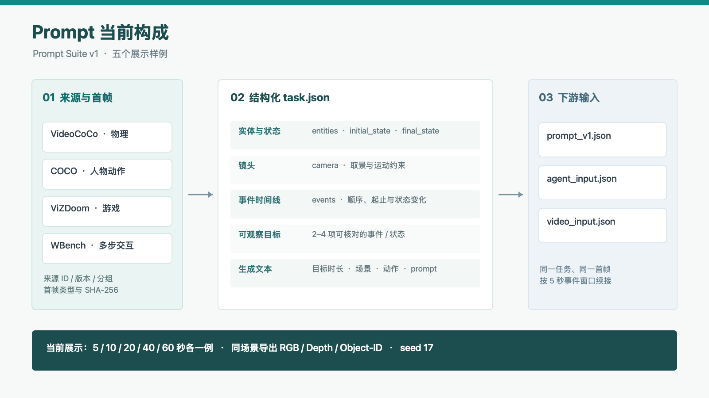

Research visualization · seed 17
CWM Benchmark
Prompt 当前构成
结构化任务到分段视频条件
task.json→prompt_v1 / agent_input / video_input→共享 Blender 场景的三路参考→每 5 秒续接
五个实例
每种参考表示并列查看参考与模型输出统一世界状态
与上方所选实例同步同一场景、相机与时间轴导出逐帧实体状态；审核时间点对齐白模、框与类别表征。骨架只来自真实 rig。五例均已通过结构与画面审核。